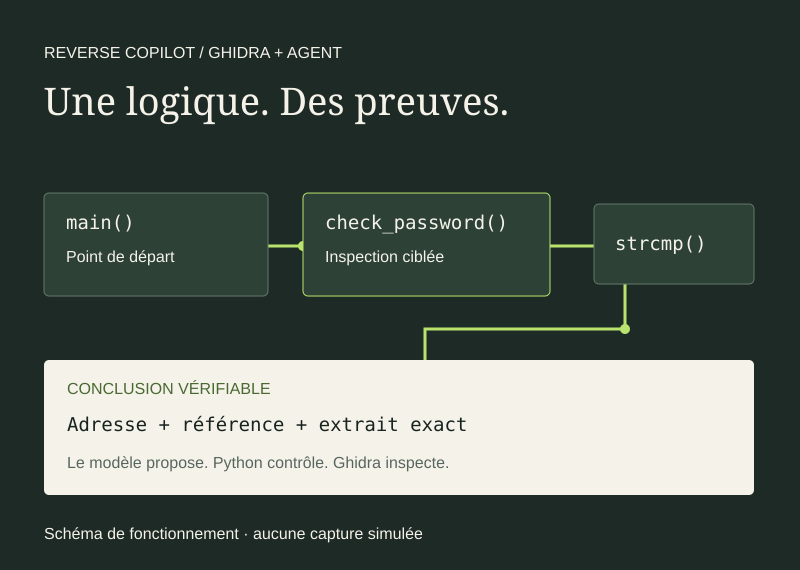
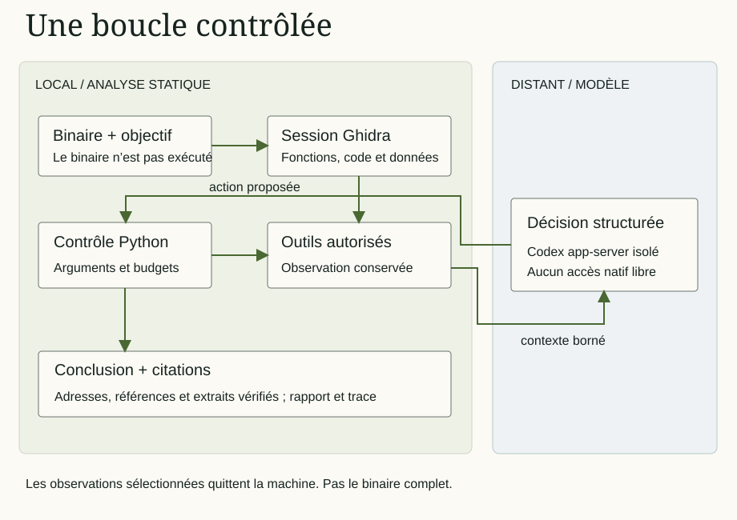
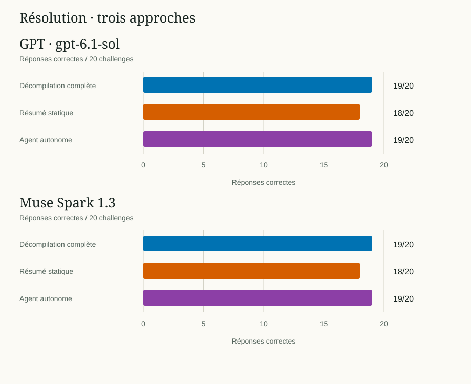
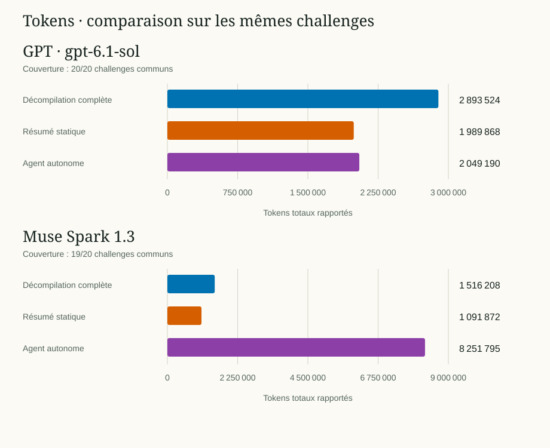
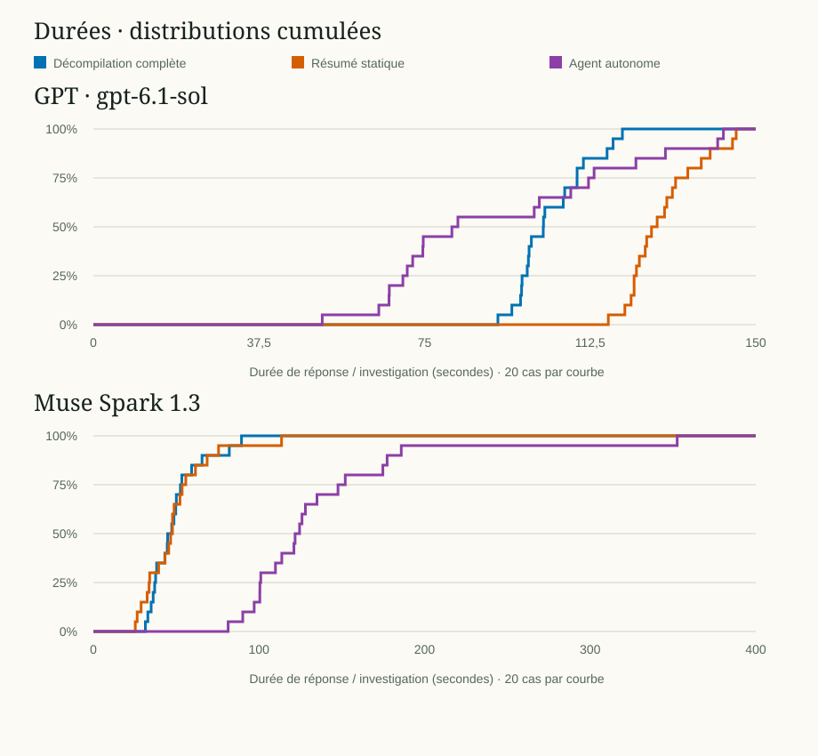

Décompilation complète
Le modèle reçoit les faits et le pseudo-C de toutes les fonctions internes avec un corps, runtime inclus.
J’ai construit un agent qui inspecte un programme compilé avec Ghidra, choisit ses outils et relie ses conclusions à des preuves vérifiables. Sur les 20 programmes pédagogiques du benchmark V2, l’agent retrouve la réponse attendue dans 19 cas, avec chacun des deux modèles testés.
Analyse locale, modèles distants. Le binaire fourni n’est jamais exécuté par l’investigation.

Quand on analyse un programme sans son code source, il faut retrouver les fonctions utiles, suivre leurs appels et examiner les données qu’elles manipulent. Comprendre une validation demande souvent de passer de l’une à l’autre.
J’ai choisi ce projet pour travailler à la fois sur la cybersécurité et l’IA. Je voulais vérifier si un agent pouvait choisir les bonnes inspections, retrouver la logique d’un programme et appuyer son explication sur ce qu’il avait réellement observé.
J’ai comparé trois façons de donner accès aux informations du binaire. Pour chaque modèle, j’ai mesuré ce que ces approches permettent de résoudre, leur consommation et leurs limites. L’autonomie de l’agent et la fiabilité de son exécution font aussi partie de l’évaluation.
Ghidra est un outil de reverse engineering : il aide à examiner un programme compilé lorsque son code source n’est pas disponible. Il repère les fonctions, chaînes de caractères et références, expose les instructions machine et reconstruit du pseudo-C.
Lire les instructions machine sous une forme compréhensible et retrouver les sauts et appels.
Reconstruire un pseudo-code proche du C pour lire plus facilement la logique.
Le pseudo-C n’est pas le code source original. Types, noms et structures peuvent être approximatifs. Le périmètre validé ici est l’analyse statique de binaires Windows PE x86-64.
Ghidra 12.1.4 fonctionne en mode headless, sans interaction graphique nécessaire à la boucle. Des scripts Java exposent les informations à Python. L’interface graphique reste utile pour examiner manuellement fonctions, références et décompilations.
J’ai écrit le programme Python qui fait travailler ensemble Ghidra, les outils d’inspection et les modèles, puis évalue les réponses. Le modèle propose une action sous forme structurée. Python vérifie ses arguments et les budgets disponibles avant de l’exécuter.
Python standard library · Ghidra · Java · PowerShell · Codex app-server isolé
Ghidra analyse le binaire sur ma machine. Les observations sélectionnées sont ensuite envoyées aux modèles distants via Codex et le routeur : les modèles ne tournent donc pas localement.

Python limite les actions aux outils prévus. Le modèle ne dispose pas d’un accès libre au shell ou aux fichiers.
Challenge pédagogique « mot de passe », V2. La réponse retrouve banana42 et cite la décompilation de check_password à l’adresse 0x140001490, preuve E003.
iVar1 = strcmp(param_1,"banana42");
return iVar1 == 0;Cet extrait vient du résultat historique. Les identifiants privés de l’exécution ne sont pas publiés. Vérifier une citation permet de retrouver son origine. Le barème vérifie séparément si l’explication répond à l’objectif.
La V2 conserve 120 résultats : 20 challenges × 3 approches × 2 modèles. Chaque case garde son résultat, y compris les échecs. Les objectifs et critères de résolution sont communs. Les contraintes interactives propres à l’agent sont évaluées séparément.
Le modèle reçoit les faits et le pseudo-C de toutes les fonctions internes avec un corps, runtime inclus.
Une sélection fixe d’au plus dix fonctions, depuis main ou le point d’entrée, en suivant les appels.
Le modèle choisit progressivement recherches, références et décompilations dans ses budgets.
Les résultats se lisent séparément pour chaque modèle. Ils permettent de comparer les approches sur ce corpus, sans établir qu’un modèle serait meilleur en général.

| Modèle · approche | Conclusions valides | Réponses correctes |
|---|---|---|
| GPT 6.1 Sol · Décompilation complète | 20/20 | 19/20 |
| GPT 6.1 Sol · Résumé statique | 20/20 | 18/20 |
| GPT 6.1 Sol · Agent autonome | 20/20 | 19/20 |
| Muse Spark 1.3 · Décompilation complète | 20/20 | 19/20 |
| Muse Spark 1.3 · Résumé statique | 20/20 | 18/20 |
| Muse Spark 1.3 · Agent autonome | 20/20 | 19/20 |

Un token est un fragment de texte traité par le modèle, par exemple un mot ou une partie de mot. Les compteurs incluent le texte reçu et généré. Intersection commune : 20/20 cas GPT, 19/20 cas Muse Spark 1.3. Tokens rapportés uniquement. Transport et fournisseur jamais additionnés. Cache inclus dans l’entrée, raisonnement inclus dans la sortie. Aucun coût monétaire déduit.
| Modèle · approche | Challenges communs | Tokens totaux | Source |
|---|---|---|---|
| GPT 6.1 Sol · Décompilation complète | 20/20 | 2 893 524 | codex_events |
| GPT 6.1 Sol · Résumé statique | 20/20 | 1 989 868 | codex_events |
| GPT 6.1 Sol · Agent autonome | 20/20 | 2 049 190 | codex_events |
| Muse Spark 1.3 · Décompilation complète | 19/20 | 1 516 208 | router_provider_ledger |
| Muse Spark 1.3 · Résumé statique | 19/20 | 1 091 872 | router_provider_ledger |
| Muse Spark 1.3 · Agent autonome | 19/20 | 8 251 795 | router_provider_ledger |

Préparation exclue. Les références incluent validation et corrections. L’investigation agent inclut outils et attente modèle. Tous les cas sont conservés. Les campagnes historiques n’ont pas été exécutées simultanément.
| Modèle · approche | Minimum s | Médiane s | Maximum s |
|---|---|---|---|
| GPT 6.1 Sol · Décompilation complète | 91.61 | 101.91 | 119.80 |
| GPT 6.1 Sol · Résumé statique | 116.61 | 127.03 | 145.56 |
| GPT 6.1 Sol · Agent autonome | 51.83 | 81.87 | 142.67 |
| Muse Spark 1.3 · Décompilation complète | 31.41 | 46.09 | 89.45 |
| Muse Spark 1.3 · Résumé statique | 25.31 | 47.22 | 113.64 |
| Muse Spark 1.3 · Agent autonome | 81.39 | 123.17 | 352.55 |
| Challenge · modèle · approche | Durée s |
|---|---|
| arithmetic · GPT 6.1 Sol · Décompilation complète | 109.53099999998813 |
| bit_masks · GPT 6.1 Sol · Décompilation complète | 98.25 |
| byte_shift · GPT 6.1 Sol · Décompilation complète | 98.51500000001397 |
| call_chain · GPT 6.1 Sol · Décompilation complète | 106.40599999998813 |
| character_conditions · GPT 6.1 Sol · Décompilation complète | 99.18799999999464 |
| checksums · GPT 6.1 Sol · Décompilation complète | 116.32800000000861 |
| decoy_paths · GPT 6.1 Sol · Décompilation complète | 96.96799999999348 |
| global_data · GPT 6.1 Sol · Décompilation complète | 96.73399999999674 |
| hello · GPT 6.1 Sol · Décompilation complète | 106.73400000002584 |
| hex_decode · GPT 6.1 Sol · Décompilation complète | 101.93700000000536 |
| linear_number · GPT 6.1 Sol · Décompilation complète | 119.79699999999139 |
| modular_number · GPT 6.1 Sol · Décompilation complète | 101.875 |
| multifunction · GPT 6.1 Sol · Décompilation complète | 102.23399999999674 |
| password · GPT 6.1 Sol · Décompilation complète | 91.60899999999674 |
| permutation · GPT 6.1 Sol · Décompilation complète | 110.96900000001187 |
| reverse_text · GPT 6.1 Sol · Décompilation complète | 97.07800000000861 |
| segments · GPT 6.1 Sol · Décompilation complète | 117.68799999999464 |
| staged_validation · GPT 6.1 Sol · Décompilation complète | 98.67199999999139 |
| switch_branches · GPT 6.1 Sol · Décompilation complète | 94.76500000001397 |
| xor · GPT 6.1 Sol · Décompilation complète | 109.54699999999139 |
| arithmetic · GPT 6.1 Sol · Résumé statique | 121.76600000000326 |
| bit_masks · GPT 6.1 Sol · Résumé statique | 122.98399999999674 |
| byte_shift · GPT 6.1 Sol · Résumé statique | 126.39100000000326 |
| call_chain · GPT 6.1 Sol · Résumé statique | 139.6720000000205 |
| character_conditions · GPT 6.1 Sol · Résumé statique | 122.45300000000861 |
| checksums · GPT 6.1 Sol · Résumé statique | 145.56299999999464 |
| decoy_paths · GPT 6.1 Sol · Résumé statique | 131.84299999999348 |
| global_data · GPT 6.1 Sol · Résumé statique | 127.67199999999139 |
| hello · GPT 6.1 Sol · Résumé statique | 131.125 |
| hex_decode · GPT 6.1 Sol · Résumé statique | 124.96799999999348 |
| linear_number · GPT 6.1 Sol · Résumé statique | 129.34399999998277 |
| modular_number · GPT 6.1 Sol · Résumé statique | 123.64100000000326 |
| multifunction · GPT 6.1 Sol · Résumé statique | 122.45299999997951 |
| password · GPT 6.1 Sol · Résumé statique | 116.61000000001513 |
| permutation · GPT 6.1 Sol · Résumé statique | 144.73399999999674 |
| reverse_text · GPT 6.1 Sol · Résumé statique | 125.29699999999139 |
| segments · GPT 6.1 Sol · Résumé statique | 137.65600000001723 |
| staged_validation · GPT 6.1 Sol · Résumé statique | 129.86000000001513 |
| switch_branches · GPT 6.1 Sol · Résumé statique | 134.60900000002584 |
| xor · GPT 6.1 Sol · Résumé statique | 120.35899999999674 |
| arithmetic · GPT 6.1 Sol · Agent autonome | 74.60900000000038 |
| bit_masks · GPT 6.1 Sol · Agent autonome | 99.82800000000134 |
| byte_shift · GPT 6.1 Sol · Agent autonome | 66.95299999999952 |
| call_chain · GPT 6.1 Sol · Agent autonome | 141.375 |
| character_conditions · GPT 6.1 Sol · Agent autonome | 71.07799999999952 |
| checksums · GPT 6.1 Sol · Agent autonome | 81.18800000000192 |
| decoy_paths · GPT 6.1 Sol · Agent autonome | 70.09300000000076 |
| global_data · GPT 6.1 Sol · Agent autonome | 82.54700000000594 |
| hello · GPT 6.1 Sol · Agent autonome | 51.82800000000134 |
| hex_decode · GPT 6.1 Sol · Agent autonome | 129.5460000000021 |
| linear_number · GPT 6.1 Sol · Agent autonome | 100.98400000000402 |
| modular_number · GPT 6.1 Sol · Agent autonome | 113.38999999999942 |
| multifunction · GPT 6.1 Sol · Agent autonome | 108.10899999999856 |
| password · GPT 6.1 Sol · Agent autonome | 64.63999999999942 |
| permutation · GPT 6.1 Sol · Agent autonome | 122.85900000000402 |
| reverse_text · GPT 6.1 Sol · Agent autonome | 72.3119999999999 |
| segments · GPT 6.1 Sol · Agent autonome | 112.125 |
| staged_validation · GPT 6.1 Sol · Agent autonome | 142.67200000000594 |
| switch_branches · GPT 6.1 Sol · Agent autonome | 74.70300000000134 |
| xor · GPT 6.1 Sol · Agent autonome | 67.01599999999962 |
| arithmetic · Muse Spark 1.3 · Décompilation complète | 52.562999999994645 |
| bit_masks · Muse Spark 1.3 · Décompilation complète | 44.844000000011874 |
| byte_shift · Muse Spark 1.3 · Décompilation complète | 34.89000000001397 |
| call_chain · Muse Spark 1.3 · Décompilation complète | 44.610000000015134 |
| character_conditions · Muse Spark 1.3 · Décompilation complète | 82.07800000000861 |
| checksums · Muse Spark 1.3 · Décompilation complète | 47.32799999997951 |
| decoy_paths · Muse Spark 1.3 · Décompilation complète | 49.75 |
| global_data · Muse Spark 1.3 · Décompilation complète | 43.15600000001723 |
| hello · Muse Spark 1.3 · Décompilation complète | 32.90700000000652 |
| hex_decode · Muse Spark 1.3 · Décompilation complète | 37.59299999999348 |
| linear_number · Muse Spark 1.3 · Décompilation complète | 31.405999999988126 |
| modular_number · Muse Spark 1.3 · Décompilation complète | 38.21899999998277 |
| multifunction · Muse Spark 1.3 · Décompilation complète | 37.01600000000326 |
| password · Muse Spark 1.3 · Décompilation complète | 36.125 |
| permutation · Muse Spark 1.3 · Décompilation complète | 59.328000000008615 |
| reverse_text · Muse Spark 1.3 · Décompilation complète | 50.10999999998603 |
| segments · Muse Spark 1.3 · Décompilation complète | 48.655999999988126 |
| staged_validation · Muse Spark 1.3 · Décompilation complète | 89.45300000000861 |
| switch_branches · Muse Spark 1.3 · Décompilation complète | 65.625 |
| xor · Muse Spark 1.3 · Décompilation complète | 53.421999999991385 |
| arithmetic · Muse Spark 1.3 · Résumé statique | 26.453000000008615 |
| bit_masks · Muse Spark 1.3 · Résumé statique | 52.296999999991385 |
| byte_shift · Muse Spark 1.3 · Résumé statique | 68.70300000000861 |
| call_chain · Muse Spark 1.3 · Résumé statique | 43.296000000002095 |
| character_conditions · Muse Spark 1.3 · Résumé statique | 53.578999999997905 |
| checksums · Muse Spark 1.3 · Résumé statique | 47.780999999988126 |
| decoy_paths · Muse Spark 1.3 · Résumé statique | 55.812000000005355 |
| global_data · Muse Spark 1.3 · Résumé statique | 34.01600000000326 |
| hello · Muse Spark 1.3 · Résumé statique | 25.312999999994645 |
| hex_decode · Muse Spark 1.3 · Résumé statique | 28.828999999997905 |
| linear_number · Muse Spark 1.3 · Résumé statique | 45.514999999984866 |
| modular_number · Muse Spark 1.3 · Résumé statique | 48.765999999974156 |
| multifunction · Muse Spark 1.3 · Résumé statique | 113.64100000000326 |
| password · Muse Spark 1.3 · Résumé statique | 33.64100000000326 |
| permutation · Muse Spark 1.3 · Résumé statique | 47.78100000001723 |
| reverse_text · Muse Spark 1.3 · Résumé statique | 46.65700000000652 |
| segments · Muse Spark 1.3 · Résumé statique | 61.64100000000326 |
| staged_validation · Muse Spark 1.3 · Résumé statique | 75.60899999999674 |
| switch_branches · Muse Spark 1.3 · Résumé statique | 39.421999999991385 |
| xor · Muse Spark 1.3 · Résumé statique | 32.5 |
| arithmetic · Muse Spark 1.3 · Agent autonome | 109.95399999999972 |
| bit_masks · Muse Spark 1.3 · Agent autonome | 177.39099999999598 |
| byte_shift · Muse Spark 1.3 · Agent autonome | 100.5630000000001 |
| call_chain · Muse Spark 1.3 · Agent autonome | 174.81300000000192 |
| character_conditions · Muse Spark 1.3 · Agent autonome | 81.38999999999942 |
| checksums · Muse Spark 1.3 · Agent autonome | 90.2190000000046 |
| decoy_paths · Muse Spark 1.3 · Agent autonome | 135.03199999999924 |
| global_data · Muse Spark 1.3 · Agent autonome | 100.51599999999598 |
| hello · Muse Spark 1.3 · Agent autonome | 97.11000000000058 |
| hex_decode · Muse Spark 1.3 · Agent autonome | 124.53099999999904 |
| linear_number · Muse Spark 1.3 · Agent autonome | 128.04699999999866 |
| modular_number · Muse Spark 1.3 · Agent autonome | 121.11000000000058 |
| multifunction · Muse Spark 1.3 · Agent autonome | 185.9380000000001 |
| password · Muse Spark 1.3 · Agent autonome | 121.8119999999999 |
| permutation · Muse Spark 1.3 · Agent autonome | 352.54699999999866 |
| reverse_text · Muse Spark 1.3 · Agent autonome | 125.98499999999876 |
| segments · Muse Spark 1.3 · Agent autonome | 147.71899999999914 |
| staged_validation · Muse Spark 1.3 · Agent autonome | 152.11000000000058 |
| switch_branches · Muse Spark 1.3 · Agent autonome | 101.09399999999732 |
| xor · Muse Spark 1.3 · Agent autonome | 113.79700000000048 |
Les figures sont générées avec Python standard library depuis les résultats V2 validés. L’export vérifie couverture, empreintes des sources, scores et audits enregistrés. Les courbes sont des distributions cumulées empiriques. Les consommations portent sur l’intersection des trois approches.
Export limité aux champs publics utiles : aucun journal brut, chemin local, prompt ni identifiant de requête. Les artefacts privés d’origine ne sont pas inclus dans le site.
Après la V2, j’ai ajouté la lecture mémoire bornée, le désassemblage et les blocs de base. Pour maîtriser le budget, les validations V2.5 utilisent uniquement Muse Spark 1.3 avec un effort high.
Accéder aux données et instructions que le seul pseudo-C ne montre pas. Le passage à high et les versions différentes empêchent d’attribuer les changements aux seuls outils.
Binaires optimisés, symboles retirés et logiques plus indirectes. Les résultats de ces campagnes restent séparés du benchmark V2.
Reconnaître des formulations équivalentes, avec contre-exemples et réévaluation hors réseau, sans assouplir les preuves.
Relier requêtes, délais et événements du garde pour distinguer un incident technique d’une erreur de résolution.
Dernière validation ciblée : contrôle court réussi, puis MODEL_RESPONSE_INVALID après quatre tours et un outil réussi. Aucun timeout sur cet essai, aucune conclusion évaluable. Les 397 tests déterministes passent. Audits et rejeux sont conformes.
Aucun nouveau garde n’a déclenché dans ce dernier essai : les mesures amont à son déclenchement restent validées par simulation uniquement. Les échecs historiques ne sont pas effacés. La version est figée avec ces limites explicites.
permutation expose la logique mais pas les octets du secret. Des outils trop limités peuvent bloquer une résolution correcte.call_chain place un helper au-delà des dix fonctions du résumé fixe.La préparation froide historique contient une mesure exceptionnellement longue dont la cause est inconnue. Elle n’est ni assimilée à du temps CPU ni mélangée aux courbes de réponse.
Ce projet m’a appris à contrôler les actions d’un agent et à vérifier ses preuves. J’ai aussi dû distinguer une réponse incorrecte d’un défaut du barème ou d’un incident technique, pour que les mesures reflètent ce qui s’était réellement passé.